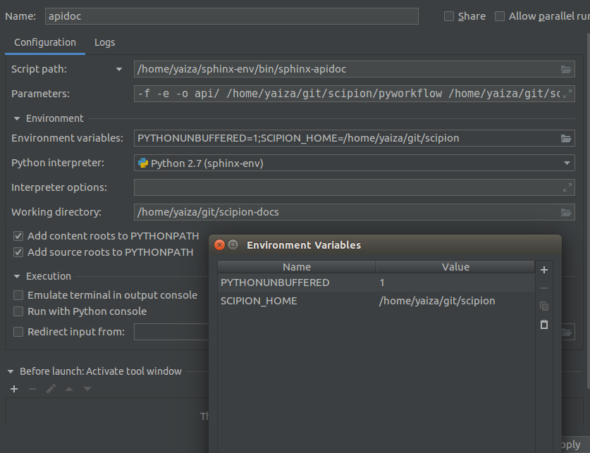

Building Scipion docs¶
Scipion’s documentation is built using Sphinx and hosted on
GitHub pages. Sphinx uses certain files like *.rst files and Sphinx’s config
conf.py to build the docs on HTML, which we can later copy to some server. In our case, we the different versions
of our docs on the docs GitHub repository . At the time of this writing we have
only one version, the branch release-2.0.0, but we’ll have more versions in the future.
The branch gh-pages contains the built
documentation for all versions (i.e. HTML files). When new commits are pushed to this branch,
https://scipion-em.github.io/docs/ will update and reflect them automatically.
On a high level, the docs have two main parts:
- The API docs, which are automatically generated from the code’s docstrings using sphinx-apidoc. To build these, we need a working installation of Scipion in our machine.
- The general docs, which are manually generated content (e.g. guides, tutorials, etc).
Sphinx virtualenv¶
- Clone the Scipion docs repository. We’ll clone to a folder called scipion-docs.
$ git clone git@github.com:scipion-em/docs.git scipion-docs
- Create a virtual environment in the directory of your choice (better not inside the repo dir) and activate it.
$ virtualenv sphinx-env
$ source sphinx-env/bin/activate
(sphinx-env) $
- Go to the repo dir (with your virtual environment activated) and install the pip requirements. Please note that
sphinxcontrib-versioningis installed from a git fork, not from pypi - the current version available in pypi does NOT work.
(sphinx-env) $ cd scipion-docs
(sphinx-env) $ pip install -r requirements.txt
NOTE: we could skip the environment creation and install the requirements in Scipion’s python. However the installation of requirements will mess with some of the versions currently available in Scipion’s site-packages, so we recommend not messing with this and installing sphinx packages in a separate virtualenv.
Generate API docs¶
The api docs are contained in the folder api of the scipion docs repository. To update them, we need to run
sphinx-apidoc. Please note that this step is not necessary if you’re just adding your own written .rst file.
We can set this up as a run configuration in PyCharm (Recommended):
Or alternatively, run this in the command line inside scipion-docs repo dir:
(sphinx-env) $ sphinx-apidoc -f -e -o api/ ~/git/scipion/pyworkflow ~/git/scipion/pyworkflow/tests/*
-fforces to overwrite existing files-egenerates one rst file per moduleapi/put output files here~/git/scipion/pyworkflowis the source python code we want to generate docs for~/git/scipion/pyworkflow/tests/*avoid generating docs for files matching this pattern.
Make html¶
This step is only used for testing purposes. It is recommended to do it if you need to test some
local changes that you don’t wish to commit just yet (which is good to avoid pushing tiny commits when you’re
writing docs content).
To test if we can generate the html files, run this inside scipion-docs.
At the time of this writing, there are multiple errors and warnings. Sphinx will just generate whatever it can.
It is a good idea to work on reducing these errors and warnings :)
(sphinx-env) $ scipion run make html
After this, we can open _build/html/index.html on a browser and see the built docs. At this point we won’t have the
version support on the bottom left corner.

Make clean¶
This step isn’t strictly necessary, but sometimes when we perform make html over and over, pages get funky and
some of them don’t have the right things when we navigate (I’ve observed this a lot with the side bars). With this
command we will remove everything under the _build folder, so that next time we run make html we do it
fresh.
(sphinx-env) $ make clean

Build with sphinx-versioning¶
For this step all changes must be pushed to the remote repository, since sphinx-versioning doesn’t take into account local changes. The command used for this:
(sphinx-env) $ scipion run /home/yaiza/sphinx-env/bin/sphinx-versioning build -r release-2.0.0 /home/yaiza/git/scipion-docs /home/yaiza/git/scipion_gh_pages
After executing this we should be able see the docs with version support by opening
/home/yaiza/git/scipion_gh_pages/index.html with our browser.
We can also trigger this command with the following run configuration in PyCharm:
- Script path:
/home/yaiza/git/scipion/scipion - Parameters:
run /home/yaiza/sphinx-env/bin/sphinx-versioning build -r release-2.0.0 /home/yaiza/git/scipion-docs /home/yaiza/git/scipion_gh_pages - Python interpreter: The one from our
sphinx-env - Working directory: Our
scipion-docsrepo dir

Important note on branches/versions¶
At the moment we don’t really have a way of auto-syncing Scipion branches with docs branches. Please be very mindful that your current Scipion branch matches the Docs branch when you push doc changes!!
Push with sphinx-versioning¶
Once we are happy with the build, we can push our docs. For this we must run this command within our scipion-docs dir:
(sphinx-env) $ scipion run /home/yaiza/sphinx-env/bin/sphinx-versioning push -r release-2.0.0 /home/yaiza/git/scipion-docs gh-pages .
The PyCharm run configuration is the same as before except for the parameters:
- Parameters :
run /home/yaiza/sphinx-env/bin/sphinx-versioning push -r release-2.0.0 /home/yaiza/git/scipion-docs gh-pages

For more info on the params of sphinx-versioning you can run sphinx-versioning --help or check sphinx-versioning docs.
Resources and tips¶
- You can reference python objects!! E.g.
The plugin class. For more info check the sphinx guide on how to reference python objects - You can install and use `pandoc<https://pandoc.org/>`_ to convert from Markdown (.md) to .rst